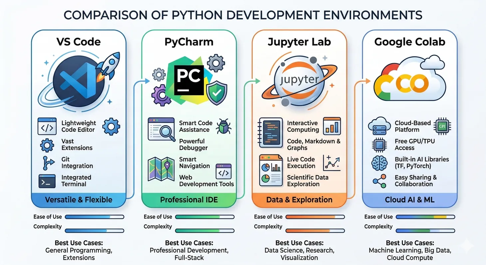
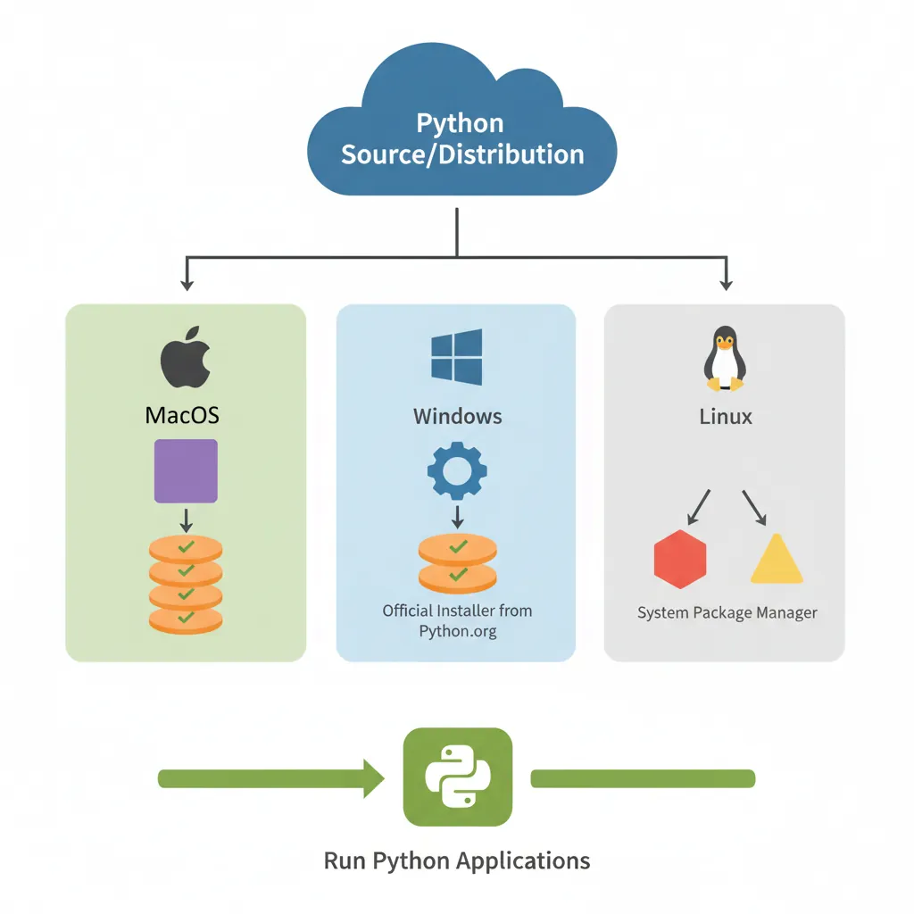
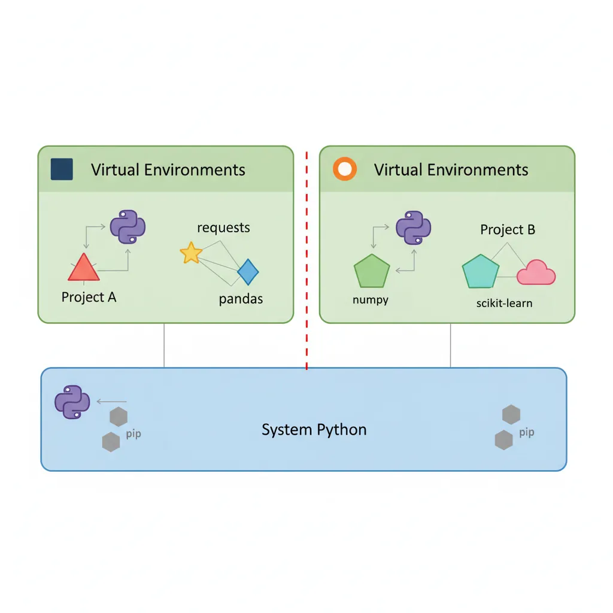
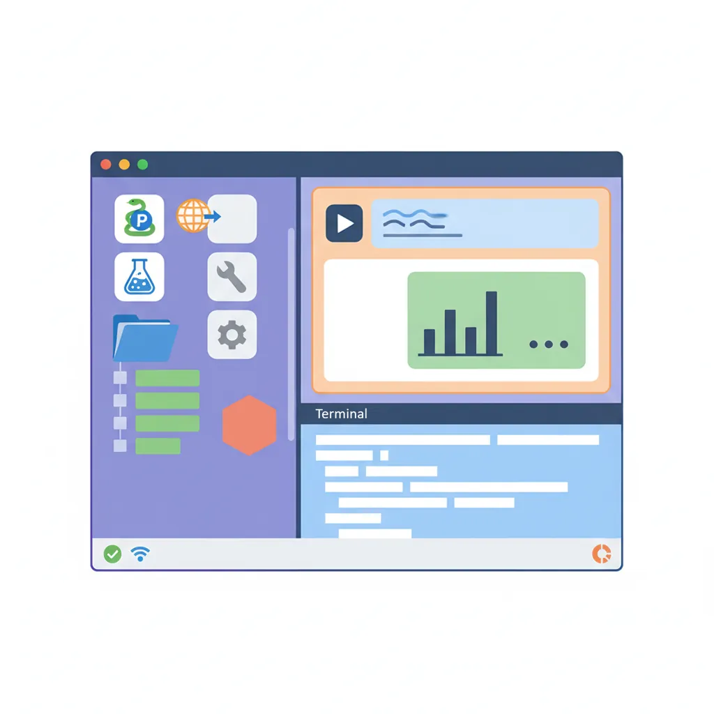
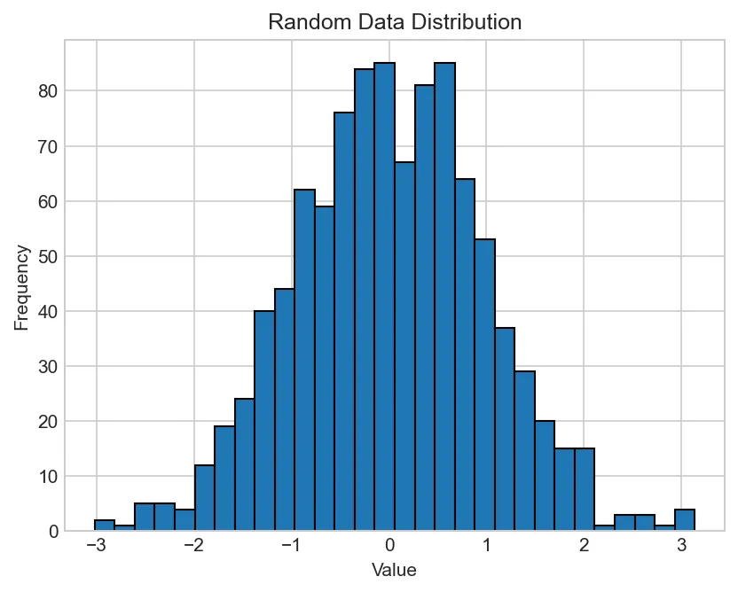
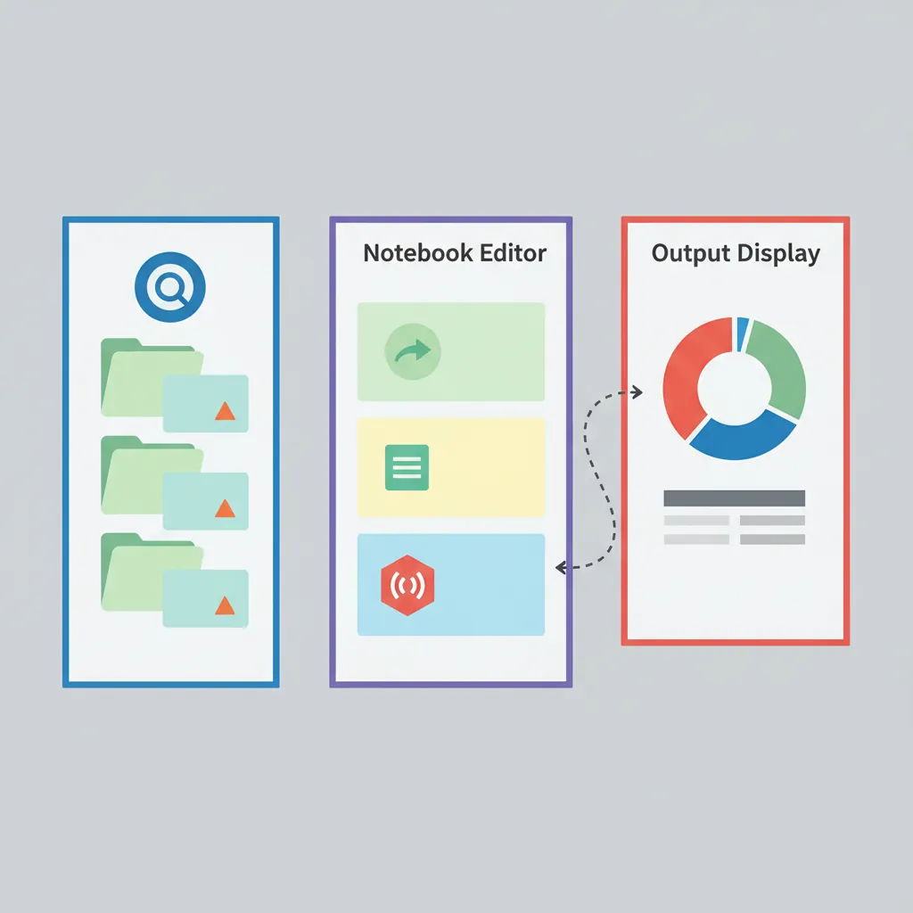

Introduction
Setting up a proper Python development environment is crucial for productivity and successful data science work. Whether you're a beginner writing your first script or an experienced developer managing complex machine learning projects, choosing the right IDE and configuring it properly can make all the difference.
In this comprehensive guide, we'll walk through setting up Python and Jupyter notebooks across four popular development environments: Visual Studio Code, PyCharm, Jupyter Lab, and Google Colab. Each platform has its strengths, and by the end of this article, you'll know how to leverage each one effectively.

Key Takeaway: Having multiple development environments configured allows you to choose the best tool for each task—VS Code for general development, PyCharm for large projects, Jupyter for exploratory analysis, and Colab for cloud-based ML experimentation.
Data Science Mastery
Python Setup & Notebooks
IDE setup, Jupyter, virtual environmentsNumPy Foundations
Arrays, broadcasting, linear algebraPandas Data Analysis
DataFrames, cleaning, manipulationData Visualization
Matplotlib, Seaborn, PlotlyMachine Learning with Scikit-learn
Classification, regression, clusteringML Mathematics & Statistics
Linear algebra, calculus, probabilityArtificial Neural Networks
Perceptrons, backpropagation, architecturesComputer Vision Fundamentals
CNNs, image processing, object detectionPyTorch Deep Learning
Tensors, autograd, model trainingTensorFlow & Keras
Sequential models, callbacks, deploymentTransformers & Attention
Self-attention, BERT, GPT architectureInstalling Python
Before configuring any IDE, you need Python installed on your system. The recommended approach is to use Python 3.10 or later for compatibility with modern libraries.

Windows Installation
Download Python from the official website and ensure you check "Add Python to PATH" during installation:
# Verify installation
python --version
pip --version
macOS Installation
Use Homebrew for the cleanest installation:
# Install Homebrew (if not already installed)
/bin/bash -c "$(curl -fsSL https://raw.githubusercontent.com/Homebrew/install/HEAD/install.sh)"
# Install Python
brew install python@3.11
# Verify installation
python3 --version
pip3 --version
Linux Installation
Most distributions come with Python pre-installed. Update to the latest version:
# Ubuntu/Debian
sudo apt update
sudo apt install python3.11 python3-pip
# Fedora
sudo dnf install python3.11 python3-pip
# Verify installation
python3 --version
pip3 --version
Understanding Virtual Environments
Virtual environments are isolated Python installations that prevent package conflicts between projects. They're essential for professional development and reproducible data science workflows.

Creating Virtual Environments with venv
# Create a new virtual environment
python -m venv myproject_env
# Activate on Windows
myproject_env\Scripts\activate
# Activate on macOS/Linux
source myproject_env/bin/activate
# Install packages in the isolated environment
pip install numpy pandas matplotlib jupyter
# Deactivate when done
deactivate
Using Conda for Environment Management
Conda is particularly popular in data science for managing both Python packages and system dependencies:
# Install Miniconda (lightweight version)
# Download from: https://docs.conda.io/en/latest/miniconda.html
# Create environment with specific Python version
conda create -n datasci python=3.11
# Activate environment
conda activate datasci
# Install data science packages
conda install numpy pandas matplotlib scikit-learn jupyter
# List all environments
conda env list
# Deactivate
conda deactivate
Pro Tip: Always create a new virtual environment for each project. This prevents version conflicts and makes your projects portable and reproducible.
uv: The Modern Python Package Manager
uv is an extremely fast Python package and project manager written in Rust, created by Astral (the makers of Ruff). It is 10–100x faster than pip and replaces an entire ecosystem of tools: pip, pip-tools, pipx, poetry, pyenv, virtualenv, and more — all in a single binary.
Why uv? Traditional Python workflows require juggling multiple tools (pyenv for versions, venv for environments, pip for packages, pipx for tools). uv unifies all of these into one fast, reliable command. It also manages Python installations directly — you don't even need Python pre-installed to get started.
Installing uv
uv can be installed with a single command on any platform:
# macOS and Linux
curl -LsSf https://astral.sh/uv/install.sh | sh
# Windows (PowerShell)
powershell -ExecutionPolicy ByPass -c "irm https://astral.sh/uv/install.ps1 | iex"
# Or via Homebrew (macOS)
brew install uv
# Or via pip/pipx (any platform)
pipx install uv
# Verify installation
uv --version
# Update uv to latest version
uv self update
Installing & Managing Python Versions
uv can install and manage Python versions directly — no need for pyenv or manual downloads:
# Install the latest Python
uv python install
# Install specific versions
uv python install 3.11 3.12 3.13
# Install alternative implementations
uv python install pypy@3.10
# List all available and installed versions
uv python list
# Pin a version for the current directory
uv python pin 3.12
uv also downloads Python automatically when needed. If you run a command that requires Python 3.12 and it's not installed, uv will fetch it for you.
Creating Projects & Virtual Environments
uv provides modern project management with lockfiles and automatic virtual environments:
# Initialize a new project
uv init my-data-project
cd my-data-project
# Add dependencies (creates .venv automatically)
uv add numpy pandas matplotlib scikit-learn jupyter
# Run commands in the project environment
uv run python my_script.py
uv run jupyter lab
# Lock dependencies for reproducibility
uv lock
# Sync environment from lockfile (e.g., on another machine)
uv sync
You can also use uv's pip-compatible interface if you prefer the traditional workflow:
# Create a virtual environment (10x faster than python -m venv)
uv venv
# Activate it (same as before)
# Windows: .venv\Scripts\activate
# macOS/Linux: source .venv/bin/activate
# Install packages (10-100x faster than pip)
uv pip install numpy pandas matplotlib jupyter
# Install from requirements.txt
uv pip install -r requirements.txt
# Compile a locked requirements file
uv pip compile requirements.in --output-file requirements.txt
Running Scripts with Inline Dependencies
One of uv's most powerful features is running scripts with inline dependency metadata. No need to create a project or virtual environment — uv handles everything automatically:
# /// script
# requires-python = ">=3.11"
# dependencies = [
# "requests",
# "rich",
# ]
# ///
import requests
from rich.pretty import pprint
resp = requests.get("https://peps.python.org/api/peps.json")
data = resp.json()
pprint([(k, v["title"]) for k, v in data.items()][:10])
# Run the script — uv installs dependencies automatically
uv run my_script.py
# Or add dependencies to an existing script
uv add --script analysis.py 'pandas' 'matplotlib' 'scikit-learn'
# Run with a specific Python version
uv run --python 3.12 my_script.py
# Run with ad-hoc dependencies (no script modification needed)
uv run --with rich --with requests fetch_data.py
Running CLI Tools with uvx
uvx (alias for uv tool run) lets you run Python CLI tools without permanently installing them — like npx for Python:
# Run tools instantly (downloads, runs, cleans up)
uvx ruff check .
uvx black my_code.py
uvx pytest
uvx jupyter lab
# Run a specific version
uvx ruff@0.4.0 check .
# Install tools permanently (added to PATH)
uv tool install ruff
uv tool install jupyter
uv tool install black
# Upgrade installed tools
uv tool upgrade ruff
uv tool upgrade --all
uv vs Traditional Tools — Speed Comparison
| Operation | pip | uv | Speedup |
|---|---|---|---|
| Install NumPy + Pandas + Matplotlib | ~12s | ~0.5s | 24x |
| Create virtual environment | ~3s | ~0.1s | 30x |
| Resolve 50+ dependencies | ~45s | ~1.2s | 37x |
| Cold install (no cache) | ~30s | ~3s | 10x |
Benchmarks from the uv benchmark suite. Warm cache results with common data science packages.
uv with Jupyter Notebooks
uv integrates seamlessly with Jupyter for data science workflows:
# Add Jupyter to your project
uv add jupyter ipykernel
# Launch Jupyter Lab in the project environment
uv run jupyter lab
# Or use uvx to run Jupyter without a project
uvx jupyter lab
# Register a uv-managed environment as a Jupyter kernel
uv run ipython kernel install --user --name=my-project
uv Advantages: 10–100x faster than pip, single tool replaces entire Python toolchain, automatic Python version management, reproducible lockfiles, inline script dependencies, zero-config project setup, and a global cache that deduplicates packages across all environments.
VS Code Setup
Visual Studio Code is a lightweight, extensible editor that has become the go-to choice for many Python developers. Its excellent Python and Jupyter support make it ideal for both scripting and notebook work.

Step 1: Install VS Code
Download and install from code.visualstudio.com
Step 2: Install Python Extension
Required Extensions
- Python (Microsoft) - Core Python support with IntelliSense, linting, debugging
- Pylance - Fast, feature-rich language server
- Jupyter - Native notebook support within VS Code
- Python Debugger - Enhanced debugging capabilities
Install via Extensions panel (Ctrl+Shift+X / Cmd+Shift+X) or command palette.
Step 3: Select Python Interpreter
Configure VS Code to use your virtual environment:
1. Press Ctrl+Shift+P (Cmd+Shift+P on Mac)
2. Type "Python: Select Interpreter"
3. Choose your virtual environment from the list
4. VS Code will now use this environment for running code
Step 4: Create and Run a Jupyter Notebook
1. Create new file with .ipynb extension
2. VS Code automatically opens in notebook mode
3. Select kernel (your Python environment) from top-right
4. Start writing code in cells
5. Run cells with Shift+Enter
Example notebook cell:
import numpy as np
import pandas as pd
import matplotlib.pyplot as plt
# Create sample data
data = np.random.randn(1000)
# Plot histogram
plt.hist(data, bins=30, edgecolor='black')
plt.title('Random Data Distribution')
plt.xlabel('Value')
plt.ylabel('Frequency')
plt.show()

Step 5: Configure Settings for Python
Enhance your VS Code Python experience with these settings (File → Preferences → Settings):
{
"python.linting.enabled": true,
"python.linting.pylintEnabled": true,
"python.formatting.provider": "black",
"python.analysis.typeCheckingMode": "basic",
"jupyter.askForKernelRestart": false,
"notebook.cellToolbarLocation": {
"default": "right",
"jupyter-notebook": "left"
}
}
VS Code Advantages: Lightweight, fast startup, excellent Git integration, massive extension ecosystem, and seamless switching between scripts and notebooks.
PyCharm Setup
PyCharm is JetBrains' dedicated Python IDE, offering powerful features for professional development. The Community Edition is free and sufficient for most data science work.
Step 1: Install PyCharm
Download from jetbrains.com/pycharm
- Community Edition: Free, open-source, supports Python scripts
- Professional Edition: Paid, includes Jupyter notebook support, database tools, web frameworks
Step 2: Create New Project with Virtual Environment
1. File → New Project
2. Choose project location
3. Select "New environment using Virtualenv" or "Conda"
4. Choose Python version
5. Click "Create"
Step 3: Install Packages
PyCharm provides a graphical package manager:
1. File → Settings → Project → Python Interpreter
2. Click "+" button to add packages
3. Search for: numpy, pandas, matplotlib, jupyter
4. Click "Install Package"
Or use the terminal within PyCharm:
# Terminal is automatically activated with project environment
pip install numpy pandas matplotlib scikit-learn jupyter
Step 4: Working with Jupyter Notebooks (Professional Edition)
1. File → New → Jupyter Notebook
2. Write code in cells
3. Run with Shift+Enter or toolbar buttons
4. PyCharm provides rich editing features within notebooks
Step 5: Configure Code Quality Tools
PyCharm Code Quality Features
- Inspections: Real-time code analysis (Settings → Editor → Inspections)
- Type Hints: Automatic type checking support
- Refactoring: Safe rename, extract method, change signature
- Debugging: Powerful visual debugger with breakpoints
- Testing: Integrated pytest, unittest support
PyCharm Advantages: Superior code intelligence, advanced debugging, built-in database tools, excellent for large-scale projects with complex dependencies.
Jupyter Lab Setup
Jupyter Lab is the next-generation web-based interface for Jupyter notebooks. It's the classic choice for exploratory data analysis and interactive computing.

Step 1: Install Jupyter Lab
# Using pip
pip install jupyterlab
# Or using conda
conda install -c conda-forge jupyterlab
# Verify installation
jupyter lab --version
Step 2: Launch Jupyter Lab
# Start Jupyter Lab server
jupyter lab
# Opens in browser at http://localhost:8888
# Ctrl+C in terminal to stop server
Step 3: Install Kernel for Virtual Environment
To use a specific virtual environment in Jupyter Lab:
# Activate your virtual environment first
source myenv/bin/activate # macOS/Linux
# or
myenv\Scripts\activate # Windows
# Install ipykernel
pip install ipykernel
# Add environment as Jupyter kernel
python -m ipykernel install --user --name=myenv --display-name "Python (myenv)"
# Now this kernel appears in Jupyter Lab's kernel selector
Step 4: Essential Jupyter Lab Extensions
Recommended Extensions
- Table of Contents: Navigate large notebooks easily
- Variable Inspector: View all variables in memory
- Git Extension: Version control integration
- Debugger: Visual debugging for notebooks
# Install extensions manager
pip install jupyterlab-git jupyter-lsp-python
# For variable inspector
pip install lckr-jupyterlab-variableinspector
Step 5: Jupyter Lab Best Practices
Configure Jupyter for optimal notebook experience:
# Generate config file
jupyter lab --generate-config
# Config location: ~/.jupyter/jupyter_lab_config.py
# Useful settings to add:
# c.ServerApp.open_browser = False # Don't auto-open browser
# c.ServerApp.port = 8888 # Default port
# c.ServerApp.notebook_dir = '/path/to/notebooks' # Default directory
Example of a well-structured notebook:
# Cell 1: Imports and Setup
import numpy as np
import pandas as pd
import matplotlib.pyplot as plt
%matplotlib inline
# Set random seed for reproducibility
np.random.seed(42)
# Configure pandas display
pd.set_option('display.max_columns', None)
pd.set_option('display.max_rows', 100)
# Cell 2: Load Data
df = pd.read_csv('data.csv')
print(f"Dataset shape: {df.shape}")
df.head()
# Cell 3: Exploratory Analysis
# Check for missing values
missing = df.isnull().sum()
print("Missing values:\n", missing[missing > 0])
# Statistical summary
df.describe()
Jupyter Lab Advantages: Native notebook experience, excellent for exploratory data analysis, rich ecosystem of extensions, great for sharing interactive results.
Google Colab Setup
Google Colab provides free cloud-based Jupyter notebooks with GPU/TPU access. It's perfect for machine learning experimentation without local hardware requirements.
Step 1: Access Google Colab
Navigate to colab.research.google.com
- Sign in with your Google account
- No installation required
- Free tier includes GPU access
Step 2: Create New Notebook
1. File → New Notebook
2. Notebook opens with empty code cell
3. Rename with meaningful title
4. Automatically saved to Google Drive
Step 3: Install Custom Packages
Colab comes with most common packages pre-installed. For additional packages:
# Install packages (runs in cell with ! prefix)
!pip install transformers
!pip install plotly
# Import as usual
import transformers
import plotly.express as px
Step 4: Enable GPU/TPU Acceleration
1. Runtime → Change runtime type
2. Select "GPU" or "TPU" from Hardware accelerator dropdown
3. Click "Save"
4. Verify GPU availability:
import torch
# Check CUDA availability
print(f"CUDA available: {torch.cuda.is_available()}")
print(f"CUDA device: {torch.cuda.get_device_name(0) if torch.cuda.is_available() else 'None'}")
# Example: Create tensor on GPU
device = torch.device('cuda' if torch.cuda.is_available() else 'cpu')
x = torch.randn(1000, 1000).to(device)
print(f"Tensor device: {x.device}")
Step 5: Working with Google Drive
Mount Google Drive to access and save files:
from google.colab import drive
# Mount Google Drive
drive.mount('/content/drive')
# Access files
import pandas as pd
df = pd.read_csv('/content/drive/MyDrive/datasets/data.csv')
# Save results
df.to_csv('/content/drive/MyDrive/results/output.csv', index=False)
Step 6: Upload and Download Files
from google.colab import files
# Upload files from local machine
uploaded = files.upload()
# Download files to local machine
files.download('output.csv')
Colab Pro Features
- Longer Runtimes: Up to 24 hours (vs 12 hours free tier)
- More RAM: Up to 32GB (vs 12GB free tier)
- Faster GPUs: Priority access to V100 and A100 GPUs
- Background Execution: Keep notebooks running when browser closed
Colab-Specific Tips
# Check available RAM and disk space
!free -h
!df -h
# Check Python version
!python --version
# Install specific Python version (if needed)
!sudo apt-get install python3.11
# List pre-installed packages
!pip list
# Clear outputs to save space
# Edit → Clear all outputs
Colab Advantages: No setup required, free GPU access, easy sharing, perfect for tutorials and education, great for machine learning experimentation without local hardware.
Best Practices for Python & Notebook Development
1. Use Version Control
Track your code with Git, even for notebooks:
# Initialize repository
git init
# Create .gitignore for Python projects
# Include: __pycache__/, *.pyc, .ipynb_checkpoints/, venv/, .env
echo "__pycache__/
*.pyc
.ipynb_checkpoints/
venv/
myenv/
.env
*.log" > .gitignore
# Add and commit
git add .
git commit -m "Initial commit"
2. Organize Notebooks Properly
Notebook Structure Best Practices
- Title and Description: First cell should be markdown with title, purpose, author, date
- Imports Section: All imports in one cell at the top
- Configuration: Constants, random seeds, display settings
- Functions: Define reusable functions before main analysis
- Linear Flow: Execute cells top to bottom without jumping
- Clear Outputs: Before committing, clear outputs of large visualizations
- Comments: Markdown cells explaining each section
3. Manage Dependencies
Always maintain a requirements file for reproducibility:
# Generate requirements.txt
pip freeze > requirements.txt
# Install from requirements.txt
pip install -r requirements.txt
Example requirements.txt:
numpy==1.24.3
pandas==2.0.3
matplotlib==3.7.2
scikit-learn==1.3.0
jupyter==1.0.0
jupyterlab==4.0.5
4. Code Quality in Notebooks
# Install code quality tools
pip install black isort flake8 nbqa
# Format notebook code cells
nbqa black my_notebook.ipynb
# Sort imports
nbqa isort my_notebook.ipynb
# Check code quality
nbqa flake8 my_notebook.ipynb
5. Convert Notebooks to Scripts
Extract production code from notebooks:
# Convert .ipynb to .py
jupyter nbconvert --to script my_notebook.ipynb
# Creates my_notebook.py with all code cells
# Remove notebook-specific code and refactor into functions
6. Security Considerations
Security Tips:
- Never commit API keys or passwords to notebooks
- Use environment variables for sensitive data
- Clear outputs before sharing notebooks publicly
- Be cautious with Colab: data is stored on Google servers
# Use environment variables for secrets
import os
from dotenv import load_dotenv
# Load .env file
load_dotenv()
# Access secrets
api_key = os.getenv('API_KEY')
database_url = os.getenv('DATABASE_URL')
Conclusion
Setting up a robust Python development environment is the foundation of productive data science work. Each platform we've covered—VS Code, PyCharm, Jupyter Lab, and Google Colab—offers unique advantages for different scenarios.
Choose VS Code for a lightweight, flexible environment with excellent extension support. PyCharm excels in large, complex projects requiring advanced debugging and refactoring. Jupyter Lab remains the gold standard for exploratory data analysis and interactive computing. Google Colab democratizes access to GPU computing and eliminates setup barriers.
By mastering all four environments, you'll have the flexibility to select the optimal tool for each task. Combine this with best practices like virtual environments, version control, and code quality tools, and you'll be well-equipped for professional Python development and data science work.
Next Steps:
- Set up at least two of these environments on your machine
- Create a sample project with virtual environment and requirements.txt
- Practice converting between .py scripts and .ipynb notebooks
- Experiment with GPU acceleration in Colab for a simple ML model
- Configure Git for notebook version control